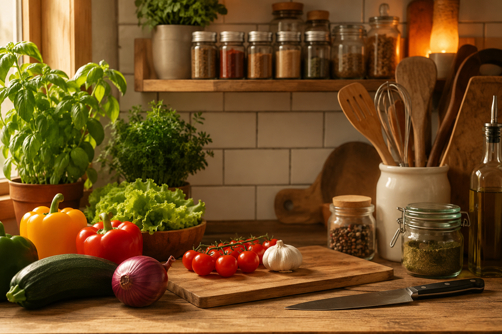
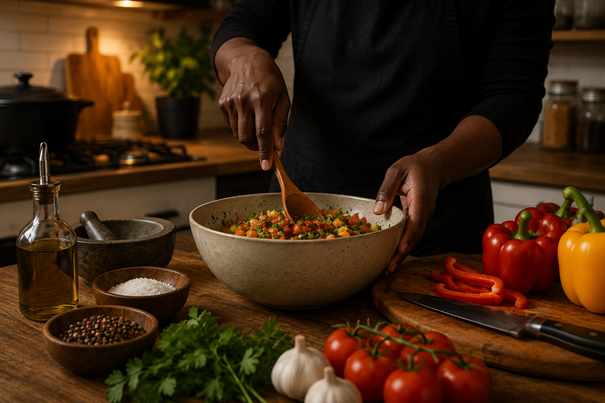
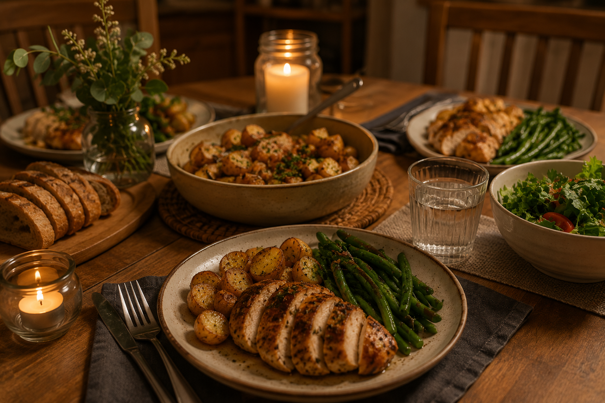
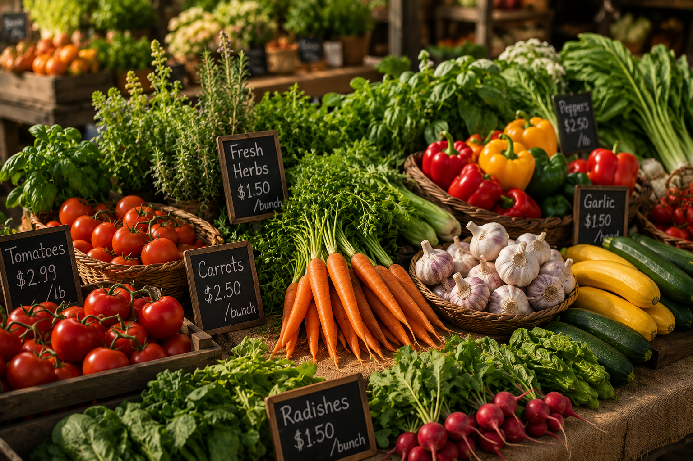
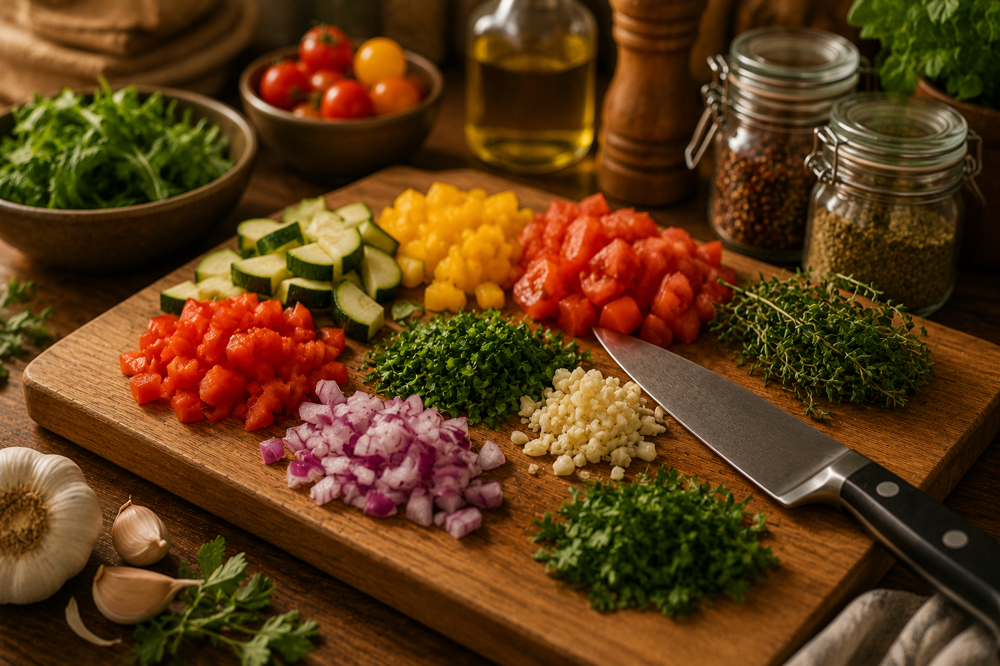
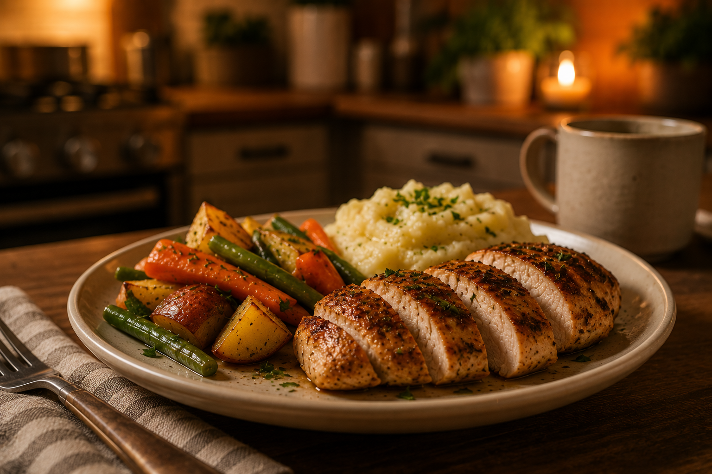
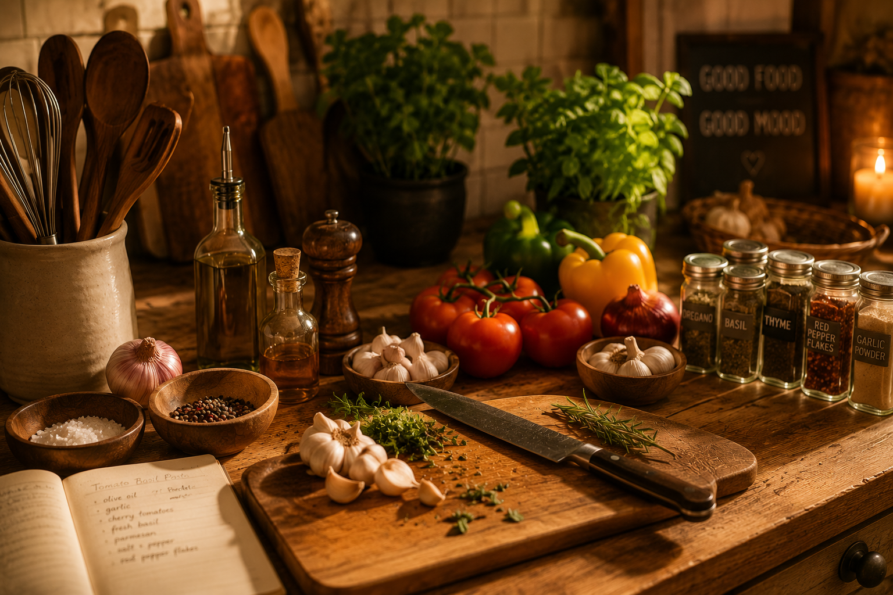

What: Home Cooking
Cooking is one of my favorite hobbies because it lets me be creative while also making something useful. Whether I am making a quick meal, trying a new recipe, or improving something I already know how to cook, it gives me a chance to experiment and learn.
This hobby site is about home cooking, simple meals, kitchen skills, and the enjoyment of making food from scratch. Cooking does not have to be fancy to be meaningful. Sometimes the best meals are simple, warm, and made with care.

- Cooking helps me relax.
- It gives me a chance to try new flavors.
- It is a useful skill for everyday life.
Who: About Me as a Cook
I am not a professional chef, but I enjoy cooking because it gives me control over what I eat and how my food tastes. I like learning by trying things out, adjusting seasonings, and figuring out what works best.
My cooking style is casual and practical. I like food that tastes good, fills you up, and does not require overly complicated steps. I also enjoy meals that can be shared with family or friends.

- I like simple meals with strong flavor.
- I enjoy learning new cooking techniques.
- I like making food that feels comforting.
When: Best Times to Cook
The best time to cook depends on the type of meal. Breakfast meals are usually quick, while dinner gives more time to prepare something filling. Weekends are great for trying new recipes because there is less pressure to rush.
I also like cooking when I need a break from schoolwork or daily responsibilities. It gives me something hands-on to focus on.

| Time | Best Meal Idea |
|---|---|
| Morning | Eggs, toast, pancakes, or oatmeal |
| Afternoon | Sandwiches, rice bowls, or pasta |
| Evening | Seafood, chicken, vegetables, or comfort meals |
Where: Best Places for Cooking
The best place to cook is a clean and organized kitchen. A good cooking space does not have to be huge. It just needs enough room to prepare ingredients, use the stove safely, and clean up afterward.
Shopping for ingredients is also part of the hobby. Grocery stores, farmers markets, and local seafood markets can all give inspiration for what to cook next.

- Home kitchen
- Grocery store
- Farmers market
- Seafood market
How: Basic Cooking Process
Cooking usually starts with choosing a recipe or deciding what ingredients are available. After that, I prepare the ingredients, season the food, cook it carefully, and taste along the way.
One of the most important parts of cooking is patience. Rushing can lead to burnt food, uneven seasoning, or messy results. Taking time to prepare makes the final meal better.

- Choose a meal or recipe.
- Gather ingredients and tools.
- Prep and season the food.
- Cook carefully and taste as you go.
- Plate the food and clean up.
Why: Why I Enjoy Cooking
I enjoy cooking because it feels rewarding. At the end of the process, I have something real that I made myself. It is a hobby that combines creativity, patience, and practical skill.
Cooking also helps me save money and make meals that fit my own taste. Instead of always eating out, I can make something at home and adjust it exactly how I want.

- Cooking builds confidence.
- It saves money.
- It allows creativity.
- It makes everyday meals more enjoyable.
AI Prompts
I used AI to help generate content ideas and image prompts for this hobby website.
The images should all follow a warm, realistic cooking photography style so the site feels consistent.

- Prompt for code: Give me content ideas for my cooking hobby site withsections for Who, What, When, Where, How, and Why.
- Prompt for content: Is my content casual and student-friendly content about cooking as a hobby, if not can you help me make it so?
- Prompt for images: Generate warm realistic cooking-themed images with a consistent cozy kitchen style.
- Prompt for functionality: I am having trouble getting my nav links and pages to function on a single website vs multiple parts. can you help?